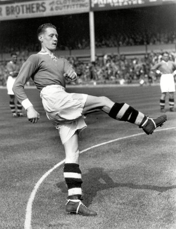

Gallery

Archie Macaulay, a fellow Scot
Boleyn Ground was hit by a German V-1 flying bomb
 Wolverhampton Wanderers and Plymouth Argyle
Wolverhampton Wanderers and Plymouth Argyle
 Frank Neary
long discussions at Cassettari’s Café on Barking Road
Malcolm Allison
Ted Fenton
Frank Neary
long discussions at Cassettari’s Café on Barking Road
Malcolm Allison
Ted Fenton
 the FA Cup, the European Cup Winners’ Cup
Final in 1943
Alan Taylor (centre)
the FA Cup, the European Cup Winners’ Cup
Final in 1943
Alan Taylor (centre)